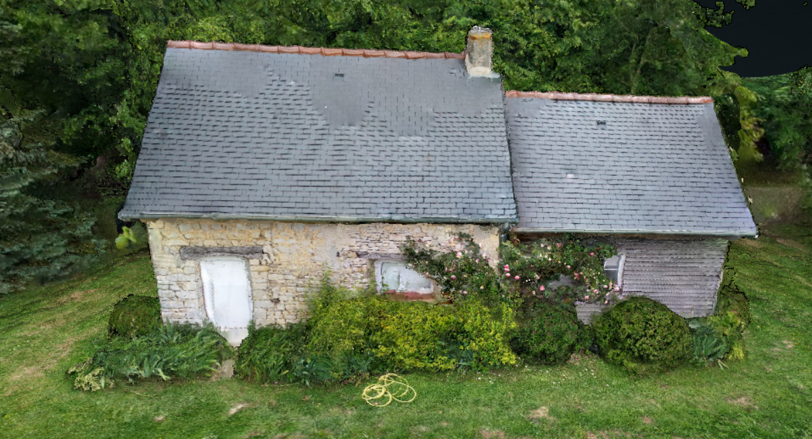
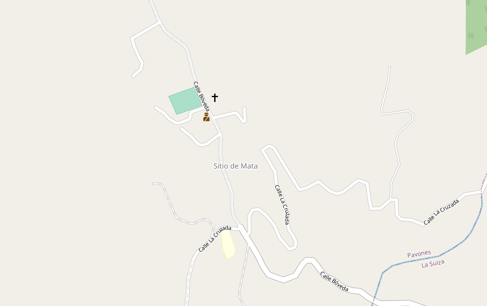
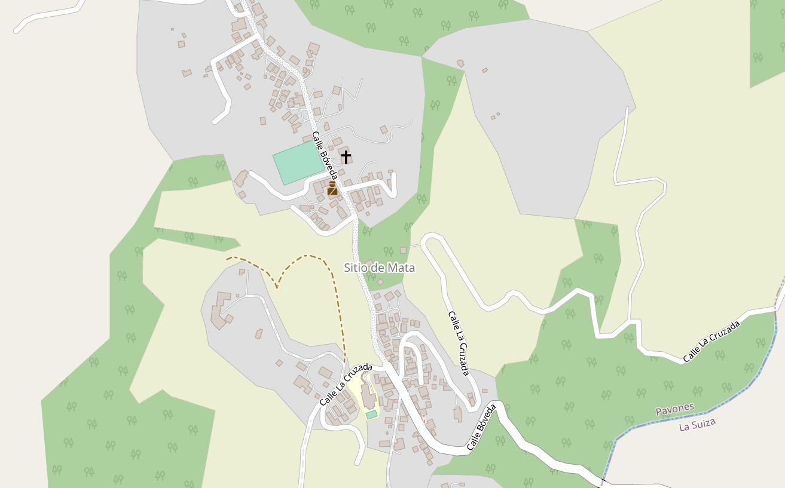

Personal Mapping Projects
Software Used: QGIS, OpenDroneMap, VSCode, Overpass Turbo, Simplemaps, OurAirports, GIMP

Offshore Oil Rigs
I mapped the Dutch offshore oil rig network, using the project as a way to practice lighting and shading in QGIS. The first step of this project was downloading data from OurAirports to get the coordinates of airfields in the Netherlands. Offshore rigs generally have helipads, so this database was a good way to get the locations of the rigs. All airfields and heliports on land were filtered out, so only the North Sea rigs remained. I mapped each rig with a light blue dot and drew effects around each point to give them a glowing effect. Once I had each oil rig individually glowing, I duplicated the layer and added a white-blue gradient heatmap of the points to make it look like the rigs are illuminating the ocean. Finally, I added GeoJSON files of the Netherlands, Denmark, Germany, Belgium and the UK from simplemaps to show where the surrounding landmasses are, and I made them black.
Credits: Data sourced from ourairports.com | GeoJSON files of countries from simplemaps.com | Artistic inspiration from Terence (@researchremora)

Flying Club Competition
I fly at an "aéroclub" in France that hosts a yearly competition. The goal is to visit as many airports in France as possible during the year. Rather than relying on a bulky Excel file as was previously done, I decided to map the airports that the club has been to in 2025 and share it with the other members. I made a map in QGIS (shown above) and an interactive map (linked below). Orange dots are airports that the club didn't go to, and blue dots are the airports that the club managed to visit during the year. On the interactive map, clicking on a dot gives you the name of the airport. I plan to keep making maps like this for 2026 and beyond!
Interactive Map
Credits: Airport Locations from ourairports.com | GeoJSON file of France from simplemaps.com | Web map tiles from Leaflet and CartoDB

Textured 3D Model
I have been creating flat orthomosaics with drone images for a few years in order to contribute data to OpenStreetMap. This time, I wanted to try the next step; 3D models. I flew a grid + orbit flight plan and took around 300 images of this building from all angles. I then processed the data with WebODM to create this textured 3D model. With a bit of work, I was then able to place the model next to a point cloud map of the area in QGIS to compare how accurate both tools are. The photogrammetry from the drone is extremely precise, allowing for accuracy below 10cm but the LiDAR point cloud covers a much larger area, so both have different uses. This project had no actual purpose other than learning how to prepare flight plans, collect data, and work with 3D models.
Credits: 3D model from WebODM


Mapping for OSM and HOT
I have been contributing vector data to OpenStreetMap and HOT (Humanitarian OpenstreetMap Team) for a few years. I usually map in 3 ways. The first mapping method I use is creating orthomosaics of an area with a drone, georeferencing it, and using it to add data to the map (missing roads, buildings, natural elements, amenities and land use). The second way I map is by walking or cycling and using StreetComplete to complete missing data in the places I visit. The last way is with HOT. I contribute to projects by using the requested satellite imagery (usually ESRI) to map missing roads and buildings within my assigned task bounds. HOT provides detailed maps to humanitarian workers in disaster-struck areas. I've worked on tasks in Peru and Rwanda for example. Many places around the world lack vector data, and HOT gives data that allows responders to know where they are and where they can go. The images above show Sitio de Mata, a small town in rural Costa Rica. It was missing a lot of data as you can see in the first image. I mapped all the roads, buildings, parks, and land-use I could find. The village now has a much more detailed map (as you can see in the second picture).
Credits: Screenshots from OpenStreetMap